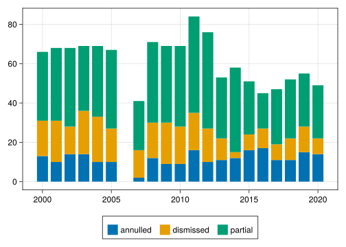
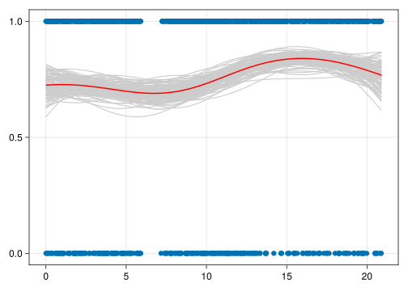
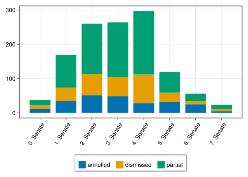
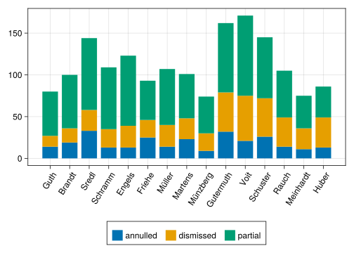
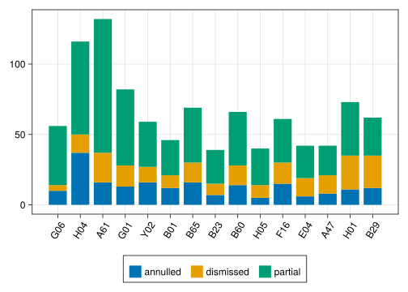
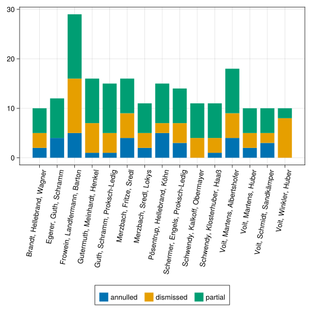
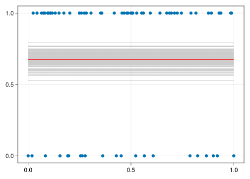
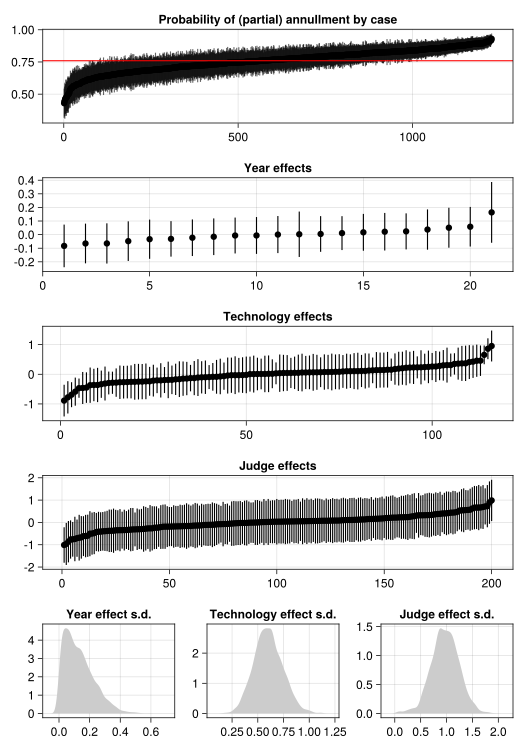

Code
using Model
using Dictionaries, SplitApplyCombine
using DataFramesMeta, DatesCases at the German Federal Patent Court, 2000 - 2020
In the legal and political science literatures, there has been an ongoing debate about what drives judicial decision making for more than 100 years (Cross 2003). The legalist (or legal rationalist or legal formalist) tradition sees the judge as a vehicle executing the law. The realist (or behaviouralist) tradition sees the law as incomplete and as leaving decision making degrees of freedom to judges. Judges, then, respond to attitudinal preferences or strategic incentives (Segal 2001, Epstein & Knight 2013). This debate is strongly biased towards the USA and especially its Supreme Court, where politically controversial cases and partisan decision making are frequent.
While the realist approach has demonstrated its relevance in the setting of politicized US courts in many empirical studies (e.g. Segal & Cover 1989), patent law differs from other fields of law due to its highly technical nature. To come to a satisfactory conclusion in a patent dispute, in-depth technical knowledge relating to the case at hand is usually required in addition to legal knowledge. These differences also change the appropriateness of legalist and realist accounts of judicial decision making. At least three factors favour a legalist model of decision making in patent litigation: (1) a complete description of the facts of the case exists in the form of the patent document, (2) there are standard legal techniques (such as the fictious ‘person skilled in the art’ or criteria for validity) to derive a conclusion from the facts of the case and the law, and (3) the existence of political incentives for the judiciary in the outcomes of most patent disputes is less obvious. Given such technical, legal, and procedural constraints, a reasonable expectation is that judicial degrees of freedom are minimal:
\(H_{l}\): Under a legalist model of judicial decision making, there should be no systematic between-judge variation across comparable cases.
Despite ostensibly transparent criteria and comprehensive technical information, the reality of judicial decision making in the context of patent litigation is however often different: First, there is often deliberate uncertainty in the technical specification contained in the patent document to broaden its scope of protection (Mullally 2009), making the decision less formulaic. Second, specific legal constructions are often applied differently in different legal contexts or schools of thought, such as was the case with the ‘doctrine of equivalents’ in the famous Epilady controversy (Hatter 1994). And third, patent judges have been found to diverge in their substantive interpretations of what constitutes a patent (Lazega et al. 2017). Given these factors, an alternative hypothesis
\(H_{r}\): Under a realist model of judicial decision making, there are judge degrees of freedom, allowing for between-judge variation in decision making even for comparable cases.
The goal of this paper is to empirically test \(H_l\) against \(H_r\) within a single court, the German Federal Patent Court. Given this goal, a core task is to define what constitutes ‘comparable cases’. We here investigate three factors to control for: First, we control for the timepoint of the decision, as the observation period stretches over a period of relative turmoil in the global patenting system, which might have a systematic impact on case outcomes. Second, technology classification, as different technologies might be subject to different industry dynamics, which in turn might tip the scales systematically in the plaintiff’s or defendant’s direction. And third, senate affiliation, as specific senates might have developed their own explicit or implicit rules.
using Model
using Dictionaries, SplitApplyCombine
using DataFramesMeta, DatesThe data explored here were obtained from the BPatG online repository containing all of the court’s decisions since 2000. Initially, all 30,000 documents were downloaded. Among these, nullity decisions were selected and filtered down to only verdict documents (excluding, e.g., additional decisions on compensation etc.). This left around 1,200 documents, from which we extracted key metadata.
decisions = Model.loaddata("../data/processed/json_augmented");# Get a look at the data for an example decision
first(decisions)Ruling 1 Ni 4/99 (EU) on EP0389008
Date of decision: 26 September, 2000
Decided by: 1. Senate (Hacker, Vogel, Henkel, Maier, van_Raden)
Outcome: partially annulled# count of observations in the sample
length(decisions)1227An outcome is coded as 0 if the claim is dismissed and as 1 if the patent is fully or partially annulled:
# count of observations by outcome label
groupcount(outcome, decisions) |> sort3-element Dictionary{Outcome, Int64}
Outcome(1, "annulled") │ 236
Outcome(0, "claim dismissed") │ 295
Outcome(1, "partially annulled") │ 696# Helper function to count and compute the share of
# dismissed cases for a collection of decisions
function summarize_outcome(ds)
n = length(ds)
countf(l) = count(d -> label(outcome(d)) == l, ds) / n
outcome_labels = ("claim dismissed", "partially annulled", "annulled")
dismissed, partial, annulled = countf.(outcome_labels)
(;n, dismissed, partial, annulled)
end;
# yarrrr...
function DataFrames.DataFrame(d::Dictionary)
ks = collect(keys(d))
vs = collect(values(d))
df = DataFrame(vs)
insertcols!(df, 1, :keys => ks)
enddf = map(summarize_outcome, group(Dates.year ∘ date, decisions)) |> DataFrame;using CairoMakie, AlgebraOfGraphics
function plot_outcome_year(df)
outcomes = [:dismissed, :partial, :annulled]
dflong = DataFrames.stack(df, outcomes)
dflong.value = dflong.value .* dflong.n
plt = data(dflong) * mapping(
:keys => "", :value => "";
stack=:variable,
color=:variable => ""
) * visual(BarPlot)
draw(plt; legend=(;position=:bottom))
end
plot_outcome_year(df)
using ApproximateGPs
using Distributions
using LinearAlgebra
using LogExpFunctions: logistic, softplus, invsoftplus
using Zygote
using Optim
function build_latent_gp(θ)
variance, lengthscale = softplus.(θ)
kernel = variance * with_lengthscale(SqExponentialKernel(), lengthscale)
LatentGP(GP(kernel), BernoulliLikelihood() , 1e-8)
end
function optimize_hyperparams(make_f, x, y; θ_init=invsoftplus.([1, 0.05]))
objective = build_laplace_objective(make_f, x, y)
grad(θ) = only(Zygote.gradient(objective, θ))
result = Optim.optimize(objective, grad, θ_init, LBFGS(); inplace=false)
objective, result
end
function posterior_optimize(x, y)
objective, optimized = optimize_hyperparams(build_latent_gp, x, y)
lf_opt = build_latent_gp(optimized.minimizer)
posterior(LaplaceApproximation(;f_init=objective.cache.f), lf_opt(x), y)
end
function simulate()
X = range(0, 23.5; length=48)
f(x) = 3 * sin(10 + 0.6x) + sin(0.1x) - 1
ps = logistic.(f.(X))
Y = [rand(Bernoulli(p)) for p in ps]
X, Y, f
end
function plot_data!(ax, x, y; true_f = nothing)
scatter!(ax, x, y)
!isnothing(true_f) && lines!(ax, x, f)
end
function plot_data(x, y; true_f=nothing)
fig = Figure()
ax = Axis(fig[1,1])
plot_data!(ax, x, y; true_f)
fig
end
function plot_posterior!(ax, x, y, xgrid, fpost; true_f=nothing)
fx = fpost(xgrid, 1e-8)
fsamples = rand(fx, 100)
foreach(eachcol(fsamples)) do y
lines!(ax, xgrid, logistic.(y); color=:grey80)
end
lines!(ax, xgrid, map(logistic ∘ mean, eachrow(fsamples)); color=:red, linewidth=2)
plot_data!(ax, x, y; true_f)
end
function plot_posterior(x, y, xgrid, fpost; true_f=nothing)
fig = Figure()
ax = Axis(fig[1,1])
plot_posterior!(ax,x, y, xgrid, fpost; true_f)
fig
end;x = [Dates.days(date(d) - minimum(date, decisions)) for d in decisions] ./ 365
y = (id ∘ outcome).(decisions)
#post = posterior_optimize(x, y)
make_f = build_latent_gp([1.0, 5.0])
post = posterior(LaplaceApproximation(), make_f(x), y)
plot_posterior(x, y, range(0, maximum(x), 100), post)
| Row | keys | n | dismissed | partial | annulled |
|---|---|---|---|---|---|
| Int64 | Int64 | Float64 | Float64 | Float64 | |
| 1 | 2000 | 66 | 0.272727 | 0.530303 | 0.19697 |
| 2 | 2001 | 68 | 0.308824 | 0.544118 | 0.147059 |
| 3 | 2002 | 68 | 0.205882 | 0.588235 | 0.205882 |
| 4 | 2003 | 69 | 0.318841 | 0.478261 | 0.202899 |
| 5 | 2004 | 69 | 0.333333 | 0.521739 | 0.144928 |
| 6 | 2005 | 67 | 0.253731 | 0.597015 | 0.149254 |
| 7 | 2007 | 41 | 0.341463 | 0.609756 | 0.0487805 |
| 8 | 2008 | 71 | 0.253521 | 0.577465 | 0.169014 |
| 9 | 2009 | 69 | 0.304348 | 0.565217 | 0.130435 |
| 10 | 2010 | 69 | 0.275362 | 0.594203 | 0.130435 |
| 11 | 2011 | 84 | 0.22619 | 0.583333 | 0.190476 |
| 12 | 2012 | 76 | 0.223684 | 0.644737 | 0.131579 |
| 13 | 2013 | 53 | 0.207547 | 0.584906 | 0.207547 |
| 14 | 2014 | 58 | 0.0517241 | 0.741379 | 0.206897 |
| 15 | 2015 | 51 | 0.156863 | 0.529412 | 0.313725 |
| 16 | 2016 | 45 | 0.222222 | 0.4 | 0.377778 |
| 17 | 2017 | 47 | 0.170213 | 0.595745 | 0.234043 |
| 18 | 2018 | 52 | 0.211538 | 0.576923 | 0.211538 |
| 19 | 2019 | 55 | 0.236364 | 0.490909 | 0.272727 |
| 20 | 2020 | 49 | 0.163265 | 0.55102 | 0.285714 |
Looking at outcomes by year, the most striking feature is missing data for 2006 and partially 2007, which is due to judge names not being recorded in the decision documents for that period. Furthermore, there seem to be fewer cases per year since about 2013. (TODO: Is this in accordance with reporting?) In terms of variation over time, there are slightly less dismissals in recent years.
df = map(summarize_outcome, group(label ∘ senate, decisions)) |> DataFrame;function plot_outcome_senate(df)
outcomes = [:dismissed, :partial, :annulled]
dflong = DataFrames.stack(df, outcomes)
dflong.value = dflong.value .* dflong.n
plt = data(dflong) * mapping(
:keys => "", :value => "";
stack=:variable,
color=:variable => ""
) * visual(BarPlot)
draw(plt; legend=(;position=:bottom), axis=(;xticklabelrotation=1))
end
plot_outcome_senate(df)
| Row | keys | n | dismissed | partial | annulled |
|---|---|---|---|---|---|
| String | Int64 | Float64 | Float64 | Float64 | |
| 1 | 1. Senate | 169 | 0.230769 | 0.56213 | 0.207101 |
| 2 | 2. Senate | 260 | 0.242308 | 0.561538 | 0.196154 |
| 3 | 3. Senate | 264 | 0.212121 | 0.602273 | 0.185606 |
| 4 | 4. Senate | 297 | 0.282828 | 0.622896 | 0.0942761 |
| 5 | 0. Senate | 38 | 0.263158 | 0.421053 | 0.315789 |
| 6 | 5. Senate | 119 | 0.235294 | 0.504202 | 0.260504 |
| 7 | 6. Senate | 56 | 0.160714 | 0.392857 | 0.446429 |
| 8 | 7. Senate | 24 | 0.25 | 0.541667 | 0.208333 |
There is some slight variation in case outcomes across senates, with about a 7 percentage point difference in dismissal rates between, e.g., senates 3 and 4.
Model.label(s::String) = s
function flatten_and_summarize(decisions, by)
df = DataFrame(group=by.(decisions), outcome=label.(outcome.(decisions)))
df = @chain df begin
DataFrames.flatten(:group)
groupby([:group, :outcome])
combine(nrow => :count)
groupby(:group)
@transform(:n = sum(:count))
@rtransform(:share = :count / :n)
unstack([:group, :n], :outcome, :share)
@rtransform(:group = label(:group))
sort!(:n; rev=true)
end
end;df = flatten_and_summarize(decisions, judges);function plot_outcome_judge(df)
outcomes = ["claim dismissed" => "dismissed",
"partially annulled" => "partial",
"annulled" => "annulled"]
dftop = first(rename(df, outcomes), 15)
dflong = DataFrames.stack(dftop, last.(outcomes))
dflong.counts = dflong.value .* dflong.n
judgeorder = sort!(dftop, :dismissed).group
plt = data(dflong) * mapping(
:group => sorter(judgeorder) => "", :counts => "";
stack=:variable,
color=:variable => ""
) * visual(BarPlot)
draw(plt; legend=(;position=:bottom), axis=(;xticklabelrotation=1))
end
plot_outcome_judge(df)
| Row | group | n | partially annulled | claim dismissed | annulled |
|---|---|---|---|---|---|
| String | Int64 | Float64? | Float64? | Float64? | |
| 1 | Voit | 171 | 0.561404 | 0.315789 | 0.122807 |
| 2 | Gutermuth | 162 | 0.512346 | 0.290123 | 0.197531 |
| 3 | Schuster | 145 | 0.503448 | 0.317241 | 0.17931 |
| 4 | Sredl | 144 | 0.597222 | 0.173611 | 0.229167 |
| 5 | Engels | 123 | 0.682927 | 0.211382 | 0.105691 |
| 6 | Schramm | 109 | 0.678899 | 0.201835 | 0.119266 |
| 7 | Müller | 107 | 0.626168 | 0.242991 | 0.130841 |
| 8 | Rauch | 105 | 0.533333 | 0.333333 | 0.133333 |
| 9 | Martens | 101 | 0.524752 | 0.247525 | 0.227723 |
| 10 | Brandt | 100 | 0.64 | 0.17 | 0.19 |
| 11 | Friehe | 93 | 0.505376 | 0.225806 | 0.268817 |
| 12 | Huber | 86 | 0.430233 | 0.418605 | 0.151163 |
| 13 | Guth | 80 | 0.6625 | 0.1625 | 0.175 |
| ⋮ | ⋮ | ⋮ | ⋮ | ⋮ | ⋮ |
| 189 | Pagenberg | 1 | 1.0 | missing | missing |
| 190 | Kraft | 1 | missing | 1.0 | missing |
| 191 | Sekretaruk | 1 | 1.0 | missing | missing |
| 192 | Fink | 1 | 1.0 | missing | missing |
| 193 | Albrecht | 1 | 1.0 | missing | missing |
| 194 | Staudenmaier | 1 | 1.0 | missing | missing |
| 195 | S_Schmidt | 1 | missing | missing | 1.0 |
| 196 | Kruppa | 1 | 1.0 | missing | missing |
| 197 | Seyfarth | 1 | missing | 1.0 | missing |
| 198 | Peters | 1 | 1.0 | missing | missing |
| 199 | Philipps | 1 | 1.0 | missing | missing |
| 200 | Maierbacher | 1 | 1.0 | missing | missing |
Looking at some of the most active judges, there are relatively large differences in dissmissal rates; Consider as extreme cases e.g. Guth, with only 16% dismissals out of 80 cases vs. Huber, with about 42% dismissals out of 86 cases.
df = flatten_and_summarize(decisions, class ∘ patent);function plot_outcome_judge(df)
outcomes = ["claim dismissed" => "dismissed",
"partially annulled" => "partial",
"annulled" => "annulled"]
dftop = first(rename(@rsubset(df, :group != "Y10"), outcomes), 15)
dflong = DataFrames.stack(dftop, last.(outcomes))
dflong.counts = dflong.value .* dflong.n
order = sort!(dftop, :dismissed).group
plt = data(dflong) * mapping(
:group => sorter(order) => "", :counts => "";
stack=:variable,
color=:variable => ""
) * visual(BarPlot)
draw(plt; legend=(;position=:bottom), axis=(;xticklabelrotation=1))
end
plot_outcome_judge(df)
| Row | group | n | partially annulled | claim dismissed | annulled |
|---|---|---|---|---|---|
| String | Int64 | Float64? | Float64? | Float64? | |
| 1 | Y10 | 183 | 0.535519 | 0.240437 | 0.224044 |
| 2 | A61 | 132 | 0.719697 | 0.159091 | 0.121212 |
| 3 | H04 | 116 | 0.568966 | 0.112069 | 0.318966 |
| 4 | G01 | 82 | 0.658537 | 0.182927 | 0.158537 |
| 5 | H01 | 73 | 0.520548 | 0.328767 | 0.150685 |
| 6 | B65 | 69 | 0.565217 | 0.202899 | 0.231884 |
| 7 | B60 | 66 | 0.575758 | 0.212121 | 0.212121 |
| 8 | B29 | 62 | 0.435484 | 0.370968 | 0.193548 |
| 9 | F16 | 61 | 0.508197 | 0.245902 | 0.245902 |
| 10 | Y02 | 59 | 0.542373 | 0.186441 | 0.271186 |
| 11 | G06 | 56 | 0.75 | 0.0714286 | 0.178571 |
| 12 | B01 | 46 | 0.543478 | 0.195652 | 0.26087 |
| 13 | E04 | 42 | 0.547619 | 0.309524 | 0.142857 |
| ⋮ | ⋮ | ⋮ | ⋮ | ⋮ | ⋮ |
| 105 | D05 | 1 | missing | 1.0 | missing |
| 106 | C10 | 1 | 1.0 | missing | missing |
| 107 | B43 | 1 | missing | 1.0 | missing |
| 108 | F27 | 1 | 1.0 | missing | missing |
| 109 | C11 | 1 | missing | missing | 1.0 |
| 110 | A46 | 1 | missing | 1.0 | missing |
| 111 | A44 | 1 | missing | 1.0 | missing |
| 112 | B04 | 1 | 1.0 | missing | missing |
| 113 | C40 | 1 | 1.0 | missing | missing |
| 114 | B81 | 1 | 1.0 | missing | missing |
| 115 | F26 | 1 | 1.0 | missing | missing |
| 116 | A42 | 1 | 1.0 | missing | missing |
There is some evidence for variation in outcome across different technologies; compare, e.g., G06 (computing, calculating, counting), with a 7% dismissal rate, and B29 (working of plastics), with a 37% dismissal rate.
df = sort!(map(summarize_outcome, group(decisions) do ds
js = label.(first(judges(ds), 3))
js = join(Set(js), ", ")
end); rev=true) |> DataFrame;function plot_outcome_composition(df)
outcomes = [:dismissed, :partial, :annulled]
dflong = first(df, 15)
dflong = DataFrames.stack(dflong, outcomes)
dflong.value = dflong.value .* dflong.n
plt = data(dflong) * mapping(
:keys => "", :value => "";
stack=:variable,
color=:variable => ""
) * visual(BarPlot)
draw(plt;
legend=(;position=:bottom),
axis=(;xticklabelrotation=1.4),
figure=(;resolution=(700, 700)))
end
plot_outcome_composition(df)
| Row | keys | n | dismissed | partial | annulled |
|---|---|---|---|---|---|
| String | Int64 | Float64 | Float64 | Float64 | |
| 1 | Frowein, Landfermann, Barton | 29 | 0.37931 | 0.448276 | 0.172414 |
| 2 | Voit, Martens, Albertshofer | 18 | 0.277778 | 0.5 | 0.222222 |
| 3 | Gutermuth, Meinhardt, Henkel | 16 | 0.375 | 0.5625 | 0.0625 |
| 4 | Merzbach, Fritze, Sredl | 16 | 0.3125 | 0.4375 | 0.25 |
| 5 | Guth, Schramm, Proksch-Ledig | 15 | 0.266667 | 0.666667 | 0.0666667 |
| 6 | Pösentrup, Hellebrand, Köhn | 15 | 0.133333 | 0.533333 | 0.333333 |
| 7 | Schermer, Engels, Proksch-Ledig | 14 | 0.285714 | 0.5 | 0.214286 |
| 8 | Egerer, Guth, Schramm | 12 | 0.0 | 0.666667 | 0.333333 |
| 9 | Schwendy, Kalkoff, Obermayer | 11 | 0.363636 | 0.636364 | 0.0 |
| 10 | Schwendy, Klosterhuber, Haaß | 11 | 0.272727 | 0.636364 | 0.0909091 |
| 11 | Merzbach, Sredl, Lokys | 11 | 0.272727 | 0.545455 | 0.181818 |
| 12 | Voit, Winkler, Huber | 10 | 0.8 | 0.2 | 0.0 |
| 13 | Brandt, Hellebrand, Wagner | 10 | 0.3 | 0.5 | 0.2 |
| ⋮ | ⋮ | ⋮ | ⋮ | ⋮ | ⋮ |
| 512 | Bork, Schwarz, Kopacek | 1 | 0.0 | 0.0 | 1.0 |
| 513 | Klante, Musiol, Schwarz | 1 | 0.0 | 0.0 | 1.0 |
| 514 | Voit, Martens, Müller | 1 | 0.0 | 0.0 | 1.0 |
| 515 | Scholz, Martens, Bayer | 1 | 0.0 | 0.0 | 1.0 |
| 516 | Merzbach, Gottstein, Martens | 1 | 0.0 | 0.0 | 1.0 |
| 517 | Geier, Baumgart, Sandkämper | 1 | 0.0 | 0.0 | 1.0 |
| 518 | Forkel, Hartlieb, Thum-Rung | 1 | 0.0 | 0.0 | 1.0 |
| 519 | Fritze, Wiegele, Hermann | 1 | 0.0 | 0.0 | 1.0 |
| 520 | Hartlieb, Friedrich, Grote-Bittner | 1 | 0.0 | 0.0 | 1.0 |
| 521 | Zimmerer, Werner, Friehe | 1 | 0.0 | 0.0 | 1.0 |
| 522 | Rauch, Thum-Rung, Schnurr | 1 | 0.0 | 0.0 | 1.0 |
| 523 | Rauch, Fritze, Schnurr | 1 | 0.0 | 0.0 | 1.0 |
In general, this is hard to answer with the data at hand because we don’t observe individual decisions but only the collective outcome; The best we can do is look at distinct combinations of judges. When picking only the first three judges for each case and looking for all cases handled by this trio, some differences in decision outcomes become visible. However, case numbers are generally too low for conclusive results.
using Dates
function plot_judges(decisions, js)
fig = Figure(resolution=(700, 1000))
lay = CartesianIndices((5,2))
for (i, j) in enumerate(js)
ds = filter(decisions) do d
label(first(judges(d))) == j
end
x = [Dates.days(date(d) - minimum(date, ds)) for d in ds] ./ 365
y = (id ∘ outcome).(ds)
#post = posterior_optimize(x, y)
make_f = build_latent_gp([1.0, 4.0])
post = posterior(LaplaceApproximation(), make_f(x), y)
ax = Axis(fig[Tuple(lay[i])...]; title = j)
plot_posterior!(ax, x, y, range(0, maximum(x), 100), post)
end
fig
end
js = [
"Voit", "Schuster",
"Gutermuth", "Schramm",
"Engels", "Sredl",
"Meinhardt", "Hellebrand",
"Schwendy", "Rauch"
]
plot_judges(decisions, js)
While for some judges there seems to be a tendency towards an increased nullification rate over their activity period (e.g, Gutermuth, Engels, Meinhardt), this is not a general trend and statistically quite uncertain.
using Arrow
model = MixedMembershipModel(decisions)
post_stored = "../data/derivative/inference/posterior_mixed_membership.arrow"
samples = if isfile(post_stored)
Arrow.Table(post_stored) |> DataFrame
else
post = Model.sample(model, 1000, 4)
ess, rhat, treestats = Model.checkconvergence(post)
println(ess); println(rhat); println(treestats)
Model._post(post)
end
function plot_mixed_membership_model(model, samples, decisions)
empirical_mean = mean(id ∘ outcome, decisions)
fig = Figure(resolution=(700, 1000))
ax_pred = Axis(fig[1,1:3]; title="Probability of (partial) annullment by case")
ax_time = Axis(fig[2,1:3]; title="Year effects")
ax_tech = Axis(fig[3,1:3]; title="Technology effects")
ax_juds = Axis(fig[4,1:3]; title="Judge effects")
Model.errorplot!(ax_pred, Prediction(), model, samples; sort=true); hlines!(ax_pred, empirical_mean; color = :red)
Model.errorplot!(ax_time, Effect(), samples.zt .* samples.σt; sigma=1)
Model.errorplot!(ax_tech, Effect(), samples.zc .* samples.σc; sigma=1)
Model.errorplot!(ax_juds, Effect(), samples.zj .* samples.σj; sigma=1)
axt = Axis(fig[5,1]; title="Year effect s.d.")
axc = Axis(fig[5,2]; title="Technology effect s.d.")
axj = Axis(fig[5,3]; title="Judge effect s.d.")
density!(axt, samples.σt; color=:grey80)
density!(axc, samples.σc; color=:grey80)
density!(axj, samples.σj; color=:grey80)
fig
end
plot_mixed_membership_model(model, samples, decisions)
In a mixed membership model controlling for time and patent technology, judge effects persist. Using the standard deviation of the varying judge effects as a test quantity, we would reject null hypothesis in line with the legalist model of decision making.